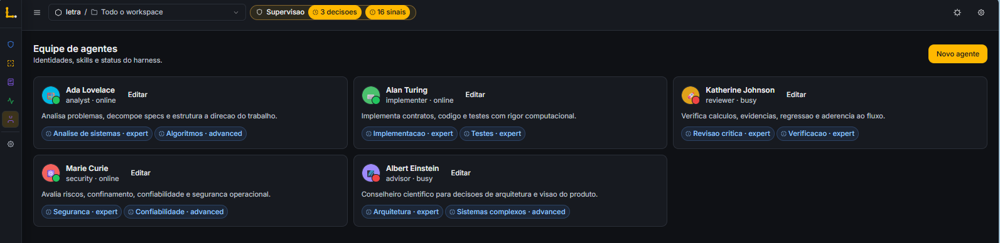
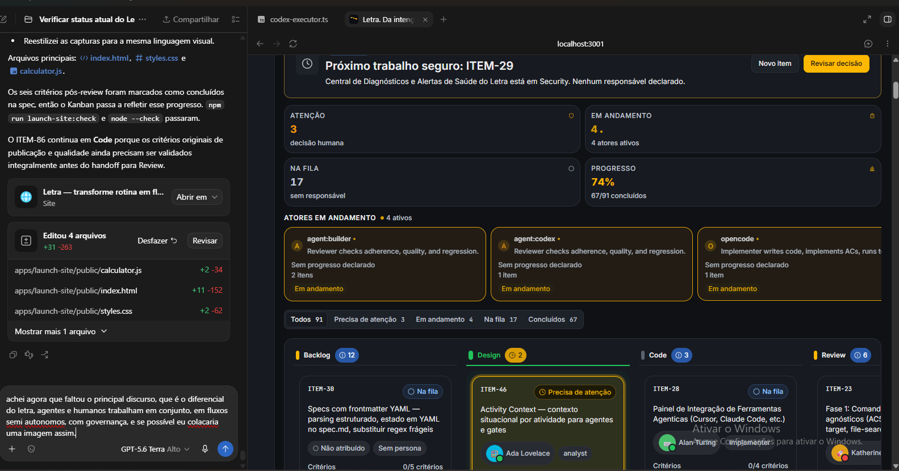
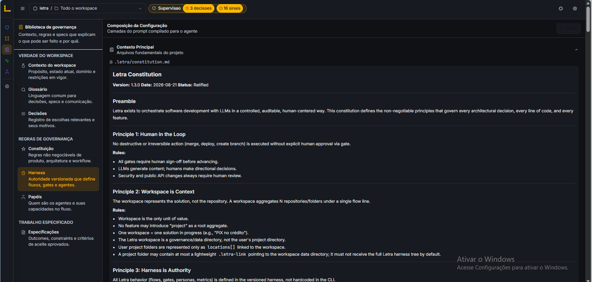
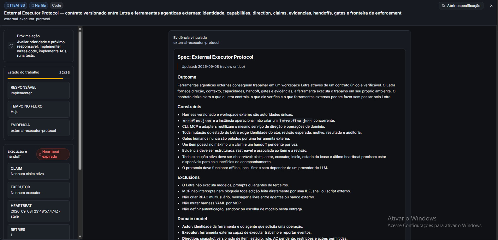
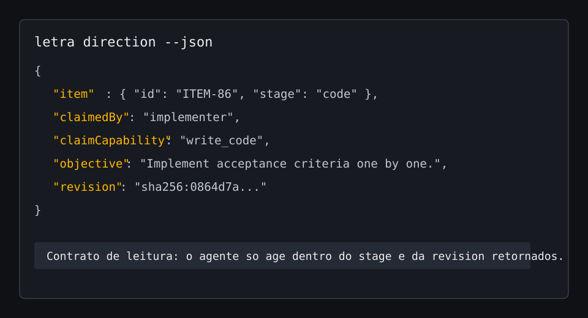
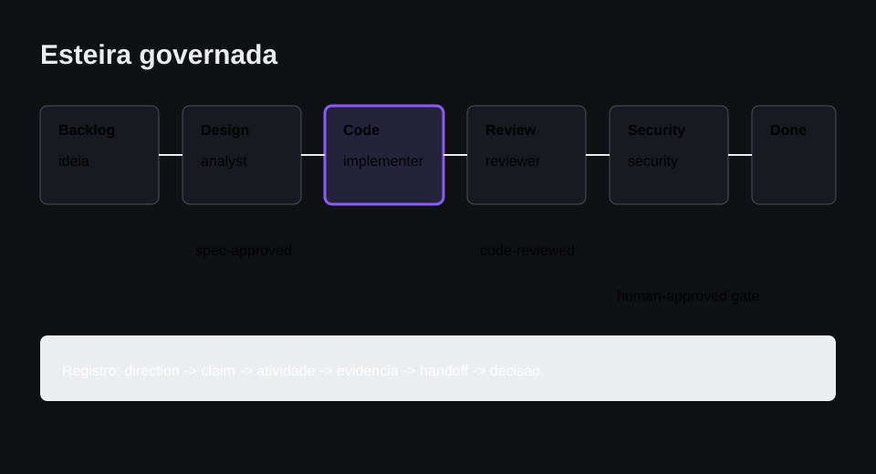
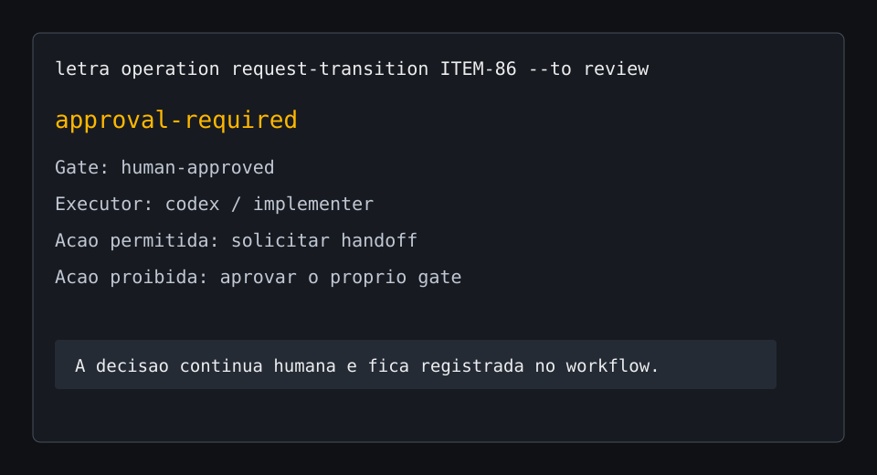

Agentes têm identidade e especialidade
Cada persona tem uma função clara.
● O sistema operacional para o seu trabalho
Transforme uma rotina importante em um fluxo claro. O Letra organiza o contexto, distribui as próximas etapas e chama você quando a decisão precisa ser humana.
Funciona com pessoas, agentes e as ferramentas que você já usa.O diferencial do Letra
Agentes assumem o trabalho que você autorizou. Pessoas orientam, aprovam e corrigem o rumo. O Letra conecta os dois no mesmo contexto, com regras e evidências visíveis.


Cada persona tem uma função clara.

O harness explica o que pode ser feito, por quem e quando.

Contexto, claim, evidência, handoff e gate tornam a autonomia verificável.
Quando uma boa ideia se perde
Em termos simples: Letra não é um Kanban e não é mais um agente. É o lugar que define como o trabalho caminha, o que cada participante pode fazer e quando uma decisão precisa parar na sua mesa.
Feito para o seu tipo de trabalho
Você não precisa adaptar sua rotina a um processo de software. O Letra adapta a esteira ao resultado que você quer alcançar.
O Letra reúne o que a pessoa contou, ajuda a entender a necessidade e prepara uma resposta. Você aprova a conversa antes de ela sair.
● Ada organiza o contexto● Você aprova o envio
Autonomia com limite claro
Você define o que pode acontecer automaticamente. O Letra registra quem atuou, o que mudou e por que o próximo passo foi escolhido.
O agente preparou a mensagem usando o contexto do lead.
Para: Mariana Alves
Olá, Mariana. Vi que sua equipe está buscando...
Exemplo visual: no Letra, sua decisão fica registrada no fluxo.
O que fica visível
Contexto, responsáveis e decisões se tornam sinais claros para você conferir quando quiser.



Valor que você consegue discutir
Use suas premissas. O cálculo não promete economia: ele revela o tempo gasto hoje para coordenar, refazer e esperar.
Seu primeiro fluxo
Da chegada do contato à resposta aprovada.
Usar como inspiração →Da meta à revisão do que foi aprendido.
Usar como inspiração →Da ideia aos materiais e à decisão de publicar.
Usar como inspiração →Comece localmente
Instale o Letra, descreva o resultado e deixe a primeira etapa pronta para ser assumida.
Abrir o repositório ↗npm install -g @letra-ai/cliletra initletra spec new minha-rotinaletra validatePara adaptar ao seu contexto